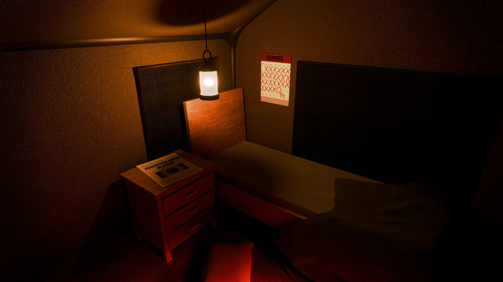
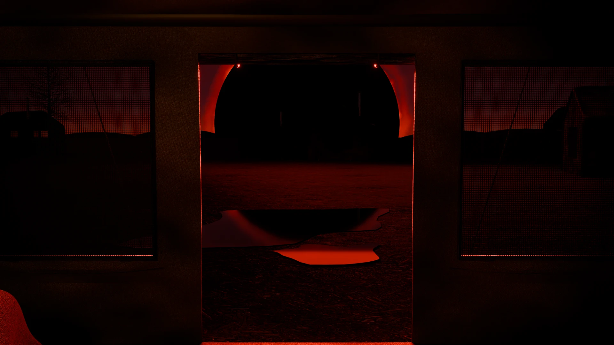
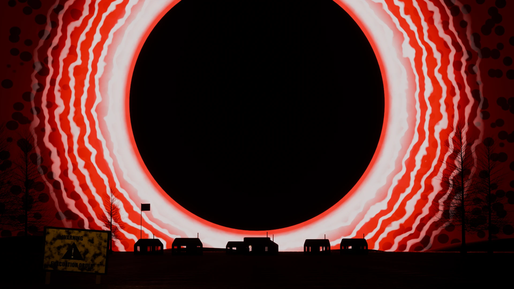
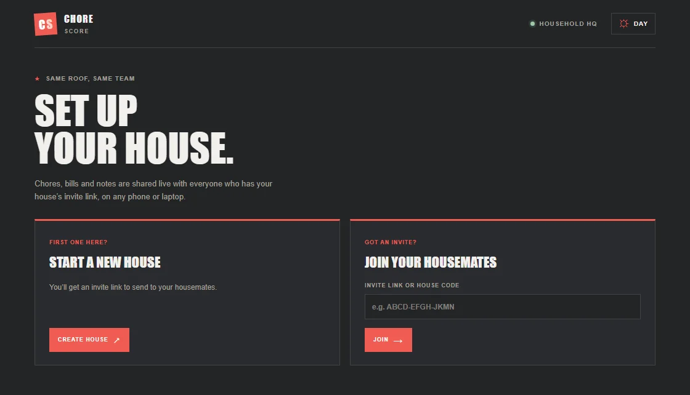
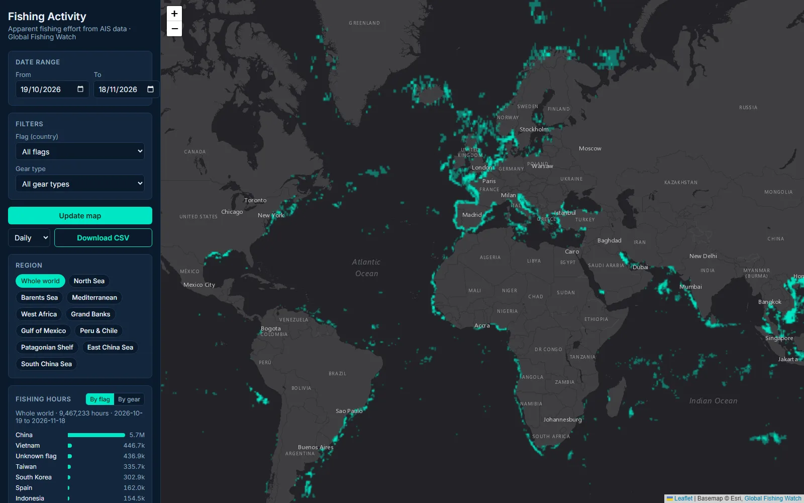

03 / 03
BLACK SUN
Three renders · Blender
Portfolio · 2026
Web apps, data maps & 3D worlds.
Same roof, same team.
A live, shared ledger for student houses. One person creates a house, sends the invite link, and everyone sees the same chores, bills, notes and chat on any device, in real time.
Hosted on Render's free tier, so the first load can take about 30 seconds while it wakes up.
Drag to spin · scroll to open the roof

Every boat at sea, on one map.
Drag to spin · pick a region
A fishing-activity tracker built on Global Fishing Watch's AIS data. Pick a date range, flag and gear type, and the map lights up with where fishing vessels have been working, with hours broken down by country and gear.
Hosted on Render's free tier, so the first load can take about 30 seconds while it wakes up.




Three renders · Blender